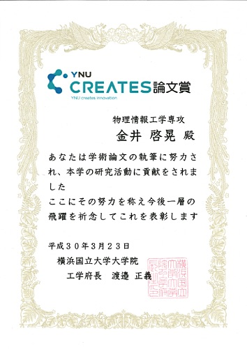
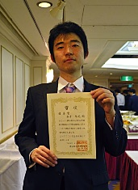
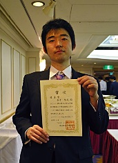
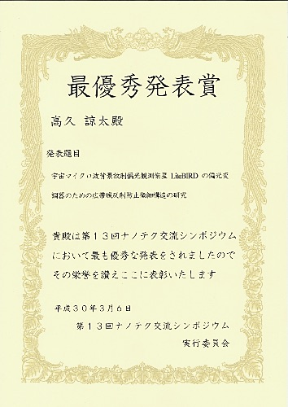
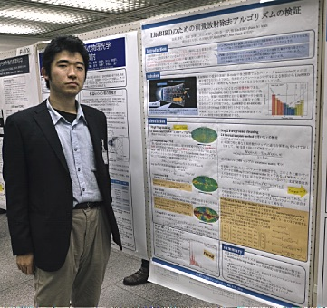
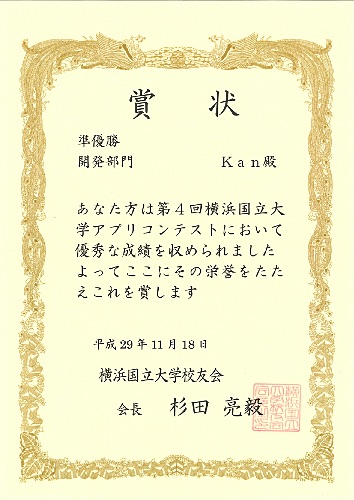
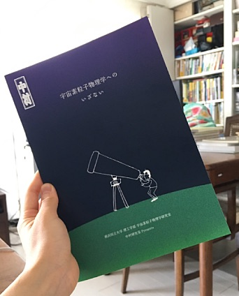
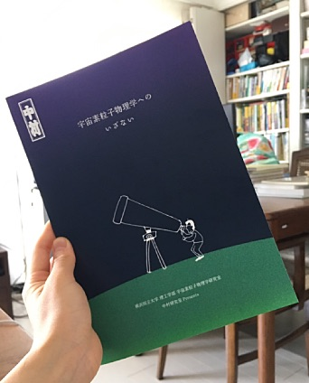

中村研ニュース（2017年度）
中村とM1の狩野が日本物理学会で登壇［2018年3月］
3月22日（木）から25日（日）まで，日本物理学会第73回年次大会が東京理科大学野田キャンパスで開催され，最終日の25日に，博士課程前期１年の狩野，そして，中村がそれぞれ登壇しました。狩野の講演のタイトルは「液体キセノン中の散乱長の計算-2」，中村の講演のタイトルは「液体キセノン中の散乱長の測定-3」で，それぞれ高エネルギー加速器研究機構および東京大学宇宙線研究所と共同で進めている液体キセノンの光学特性に関係する研究について報告し，有益な質疑応答が行われました。
【祝】博士課程前期２年の金井がYNU CREATES論文賞受賞と成績優秀者の表彰！［2018年3月］
 
博士課程前期２年の金井啓晃が，3月23日（金）付けで，YNU CREATES論文賞を工学府から受けました。また，平成29年度修了生の成績優秀者として同窓会からも表彰を受けました。

博士課程前期２年の金井啓晃が，3月23日（金）付けで，YNU CREATES論文賞を工学府から受けました。また，平成29年度修了生の成績優秀者として同窓会からも表彰を受けました。
修士生１名と学部生５名が修了・卒業［2018年3月］
3月23日（金）に修了式・卒業式が行なわれ，中村研も修士生１名と学部生５名が無事に修了・卒業して学位が授与されました。 修了・卒業したメンバーは次の通りで，卒業した４年生は２人が就職し，３人は進学して内１人が中村研に残ります。- 修士修了
- 金井 啓晃
- 学部卒業
- 高久 諒太，石原 慧，中野 龍之介，橋本 稀，廣瀬 開陽
M1の狩野が修士中間発表会で発表［2018年3月］
3月7日（水），8日（木）に工学府物理情報工学専攻物理工学コースの修士中間発表会が開かれ，7日（水）に中村研の博士課程前期１年の狩野がポスター発表を行ないました。発表のタイトルは次の通りです。 ◎狩野 芳樹：「液体キセノン中のRayleigh散乱長の理論値の検証」【祝】学部４年の高久がナノテク交流シンポジウムで最優秀発表賞を受賞！［2018年3月］
 3月6日（火）に，横浜国立大学中央図書館１階メディアホール・大学会館において横浜国立大学・横浜市立大学第13回ナノテク交流シンポジウムが開催され，学部４年の高久が発表して100件近い発表の中から最高の最優秀発表賞を受賞しました。
発表のタイトルは「宇宙マイクロ波背景放射偏光観測衛星LiteBIRDの偏光変調器のための広帯域反射防止微細構造の研究」でした。
3月6日（火）に，横浜国立大学中央図書館１階メディアホール・大学会館において横浜国立大学・横浜市立大学第13回ナノテク交流シンポジウムが開催され，学部４年の高久が発表して100件近い発表の中から最高の最優秀発表賞を受賞しました。
発表のタイトルは「宇宙マイクロ波背景放射偏光観測衛星LiteBIRDの偏光変調器のための広帯域反射防止微細構造の研究」でした。
学部４年生の４人が卒論発表会で発表［2018年2月］
2月22日（木）に理工学部物理工学EPの卒論発表会が開かれ，中村研の学部４年生の４人が発表を行ないました。発表のタイトルは次の通りです。
◎廣瀬 開陽：「POLARBEAR-2実験における焦点面検出器のハードウェアマップ作成手法の研究」◎中野 龍之介：「深層学習を用いた宇宙背景放射観測装置の較正」
◎橋本 稀：「偏光情報を用いた散乱光測定精度向上の研究」
◎石原 慧：「液体キセノン生成における自動制御」
M2の院生が修論発表会で発表［2018年2月］
2月14日（水）〜16日（金）に工学府物理情報工学専攻物理工学コースの修論・修了ポートフォリオ発表会が開かれ，14日（水）に中村研の博士課程前期２年の院生が発表を行ないました。発表のタイトルは次の通りです。
◎金井 啓晃：「星間物質によるマイクロ波放射モデルの改良とCMB偏光解析の最適化」JAXA宇宙科学研究所の福家英之先生の談話会［2018年2月］
2月7日（水）に，JAXAの宇宙科学研究所の福家英之先生に，学科の談話会をお願いしました。題目は「GAPS計画：宇宙線反粒子観測によるダークマター探索」で，宇宙線中の反重陽子を高感度で探索する手法に基づく宇宙暗黒物質探索計画についてお話し頂きました。研究室の紹介パンフレット第２版［2018年2月］
 中村研究室の紹介パンフレット「宇宙素粒子物理学へのいざない」（京都工芸繊維大学大学院の宇都宮里梨子氏の全面的なご協力とデザインによる）が，若干手直しされて第２版になりました。なお，同じもののデジタル版もここに公開しています。対応するQRコードもご利用下さい。
中村研究室の紹介パンフレット「宇宙素粒子物理学へのいざない」（京都工芸繊維大学大学院の宇都宮里梨子氏の全面的なご協力とデザインによる）が，若干手直しされて第２版になりました。なお，同じもののデジタル版もここに公開しています。対応するQRコードもご利用下さい。
次期４年生の仮配属［2018年1月］
1月22日（月）に，中村研の平成30年度の新卒研生として５人が仮配属されました。OBの山下徹氏が来訪［2018年1月］
1月19日（金）に，中村研OBの山下徹氏（現・旭硝子）が来訪しました。宇宙科学シンポジウムでＭ2の金井が発表［2018年1月］
1月9日（火），10日（水）に宇宙航空研究開発機構で第18回宇宙科学シンポジウムが開かれ，両日に博士課程前期２年の金井が，宇宙のインフレーションモデルの検証を目指す共同研究，宇宙マイクロ波背景放射のＢモード偏光観測衛星計画LiteBIRDに関するポスター発表をしました。越智の発表のタイトルは，「LiteBIRDのための前景放射除去アルゴリズムの検証」でした。【連絡】中村研に関心をお持ちの３年生へ［2017年12月］
本Web内の研究テーマの情報は古いものがありますが，今年も非常に忙しいため更新には時間が掛かりそうです。そこで，研究内容に関する最新の情報は，研究室に直接来てお確かめ下さい。お手数ですが，よろしくお願いします。 なお，以前から，卒研配属を考えている学部３年生へ向けたメッセージを載せています。>> メッセージのページ
中村宅で中村研の忘年会［2017年12月］
12月27日（水）に，今年も中村宅に在学生の面々が集まり，中村研の忘年会のひとときを楽しく過ごしました。スーパーカミオカンデのジグソーパズルもお開きまでに完成させることが出来ました！大学院理工学府博士課程（前期）の一般選抜で１名合格［2017年12月］
平成30年度横浜国立大学大学院理工学府博士課程（前期）の一般選抜において，本研究室を志望する受験生が１名合格しました。中村が神岡鉱山でXMASS実験のシフトを実施［2017年12月］
12月16日（土）から18日（月）まで，中村が，神岡鉱山で進められている暗黒物質探索実験XMASSのシフトを行ないました。M2の金井が国際学会PASREG2017で発表［2017年12月］
12月11日（月）と12日（火）に，超伝導技術に関する国際ワークショップPASREG2017が，東京豊洲の芝浦工業大学で開かれ，博士課程前期２年の金井が参加して11日にポスター発表を行ないました。ポスターのタイトルは，"Estimating the rotational energy loss of a superconducting magnetic bearing under no-gravity for use in space applications"でした。中村が東大宇宙線研共同利用研究成果発表会で講演［2017年12月］
12月8日（金），9日（土）に，東京大学宇宙線研究所の共同利用研究成果発表研究会が東京大学宇宙線研究所（柏キャンパス）で開催され，中村も発表を依頼されて8日（金）の午後に講演を行ないました。講演のタイトルは「液体キセノン中におけるシンチレーション光の散乱過程の研究」で，表題の研究の現状と今後の計画について報告しました。中村が学部３年生向けに卒研紹介［2017年12月］
12月7日（木）に，物理工学EPの３年生向けの卒研ガイダンスがあり，中村も研究室紹介を行ないました。わずか７分でしたが，興味を持つきっかけになれば幸いです。詳しいことは，研究室に来て直接聞いて頂ければ幸いです。京都工芸繊維大学大学院の宇都宮氏がXMASSの実験装置に紹介映像を試写［2017年12月］
12月5日（火）に，京都工芸繊維大学大学院工芸科学研究科の宇都宮里梨子氏が，岐阜県神岡鉱山内でXMASS実験の研究を紹介する分かりやすい映像を実験装置に試写しました。 最終版は来春に完成予定で，作品全体の公開も来春に京都で行なわれる予定です。M2の金井とB4の高久が米国University of California, Berkeleyで発表［2017年12月］
12月3日（日）から10日（日）まで，現在進行中のLiteBIRD（宇宙マイクロ波背景放射の偏光観測を目的とした科学衛星）計画に関する B mode from space workshop（12/4-6）及び face to face meeting（12/7,8）が，米国University of California, Berkeleyで開かれ，博士課程前期２年の金井と学部４年の高久が参加し研究発表を行ないました。大学院理工学府博士課程（前期）の特別選抜で２名合格［2017年11月］
平成30年度横浜国立大学大学院理工学府博士課程（前期）の特別選抜において，本研究室を志望する受験生が２名合格しました。中村が小柴研同窓会「クォーク会」に出席［2017年11月］
11月23日（木）に，小柴研究室の同窓会「クォーク会」が開かれ，中村が出席しました。小柴先生は9月に満91歳になられています。【祝】博士課程前期２年の金井と学部４年の中野が横浜国立大学アプリコンテストで受賞！［2017年11月］
 第４回横浜国立大学アプリコンテスト（YAC2017）において，11月18日（土）に決勝が行なわれた結果，博士課程前期２年の金井啓晃（チーム「KAN」）がアプリ開発部門で準優勝し，学部４年の中野（チーム「Ｎ」）がハードウェア部門でスポンサー賞（rakumo賞）を受賞しました。
第４回横浜国立大学アプリコンテスト（YAC2017）において，11月18日（土）に決勝が行なわれた結果，博士課程前期２年の金井啓晃（チーム「KAN」）がアプリ開発部門で準優勝し，学部４年の中野（チーム「Ｎ」）がハードウェア部門でスポンサー賞（rakumo賞）を受賞しました。
中村がYNUサイエンスカフェに参加［2017年11月］
11月16日（木）に第56回YNUサイエンスカフェ「私たちの生活と都市のみどり」（話題提供：環境情報研究院准教授の佐々木雄大先生）が本学の附属図書館のカフェにて開催され，中村も議論に参加しました。中村がYNUサイエンスカフェでファシリテータを担当［2017年10月］
10月20日（金）に第55回YNUサイエンスカフェ「怖い？怖くない？情報家電へのサイバー攻撃のホントのところ」（話題提供：大学院環境情報研究院准教授の吉岡克成先生）が横浜新都市ビル（そごう横浜店）９階センタープラザで開催され，中村もファシリテータを担当しました。学生がカブリIPMUのシンポジウムに参加［2017年10月］
10月16日（月）から18日（水）まで，カブリIPMUのシンポジウムが柏の葉コンファレンスセンターで開催され，中村研の学生も参加しました。ROUTEプロジェクトで２人の学部３年生を受入れ［2017年10月］
物理工学EPでは昨年から始まったROUTE（Research Opportunities for UndergraduaTE）について，中村研は２人の３年生を受入れました。中村が神岡鉱山でXMASS実験のシフトを実施［2017年9月］
9月22日（金）から24日（日）まで，中村が，神岡鉱山で進められている暗黒物質探索実験XMASSのシフトを行ないました。中村とB4の高久が日本物理学会秋季大会で登壇［2017年9月］
9月12日（火）から15日（金）まで，日本物理学会2017年秋季大会が宇都宮大学峰キャンパスで開催され，中村が12日に，また，学部４年の高久が15日にそれぞれ登壇しました。講演のタイトルは，中村が「液体キセノン中のレイリー散乱長の計算」，高久が「RCWAを用いたCMB偏光観測のためのモスアイ式広帯域反射防止の設計とその評価」で，中村研で進めている共同研究について報告しました。
OBの高橋純氏が来訪［2017年8月］
8月29日（火）に，中村研の卒業生で東京学芸大学の高橋純先生が中村研に立ち寄り，元気な姿を見せてくれました。工学府から理工学府への改組計画が認可［2017年8月］
8月28日（月）に，平成３０年度４月からの工学府から理工学府への改組計画が認められました。自らの専門分野以外の分野の科学技術にも目を向ける進取の精神に富み，高い倫理観とグローバルに活躍するために必要な国際的に通用する知識と能力において理学と工学の両方のセンスを兼ね備えた理工系人材を育成します。博士課程前期の定員の増加も認められています。詳しくは，本学のWebページの情報をご覧下さい。中村が神岡鉱山でXMASS実験のシフトを実施［2017年8月］
8月13日（日）と14日（月）に，中村が，神岡鉱山で進められている暗黒物質探索実験XMASSのシフトを行ないました。暑気払いの宴会［2017年8月］
8月10日（木）に，中村研で暑気払いの宴会が開かれました。研究室の紹介パンフレットが完成！［2017年8月］
 
8月5日（土），6日（日）の２日間，本学でオープンキャンパスが行われます。中村研究室は，今年度は物理工学教育プログラムのオープンラボの対象研究室にはなっていませんが，本研究室に関心をお持ちの方は，研究室を覗いて見て下さい。誰か適当な研究室メンバーが居ましたらご対応したいと思います。

8月5日（土），6日（日）の２日間，本学でオープンキャンパスが行われます。中村研究室は，今年度は物理工学教育プログラムのオープンラボの対象研究室にはなっていませんが，本研究室に関心をお持ちの方は，研究室を覗いて見て下さい。誰か適当な研究室メンバーが居ましたらご対応したいと思います。また，オープンキャンパス2017に合わせ，研究室の紹介パンフレット「宇宙素粒子物理学へのいざない」（第１版）が，京都工芸繊維大学大学院の宇都宮里梨子氏の全面的なご協力とデザインにより完成しました。中村研究室にお越しの際は，是非お手にとってご覧下さい。なお，同じもののデジタル版もここに公開しています。対応するQRコードもご利用下さい。
中村がYNUサイエンスカフェを担当［2017年7月］
7月14日（金）に第54回YNUサイエンスカフェ「「四元数」の世界」（話題提供：環境情報研究院准教授の本田淳史先生）が本学の附属図書館のカフェにて開催され，中村が司会進行も担当しました。参加者の皆様と支えて下さった多くのスタッフの皆様のお陰で楽しい時間となりました。中村が神岡鉱山でXMASS実験のシフトを実施，他［2017年6月］
6月15日（木）から17日（土）まで，中村が，神岡鉱山で進められている暗黒物質探索実験XMASSのシフトを行ないました。また，6月14日（水）には，博士課程前期１年の狩野が，液体キセノンの特性の研究の参考のためXMASS実験を見学しました。さらに，6月15日（木）には，京都工芸繊維大学大学院の宇都宮里梨子氏が，研究紹介のリーフレット作成のためにXMASS実験を見学しました。中村が神岡鉱山でXMASS実験のシフトを実施［2017年5月］
4月30日（日）と5月1日（月）に，中村が，神岡鉱山で進められている暗黒物質探索実験XMASSのシフトを行ないました。４年生を含む学生がKEKの各実験を見学［2017年4月］
4月26日（水）に，学部４年および博士課程前期の各学生が，高エネルギー加速器研究機構（KEK）で行われている国際共同実験実験などを見学しました。見学にご協力頂いたKEKの各先生方に心より御礼申し上げます。１名が大学院に進学し，４名が卒研配属しました［2017年4月］
2017年度がスタートし，進学した新Ｍ１の１人と新４年生４人が研究室に配属されました。- 狩野 芳樹（M1）
- 石原 慧（B4）
- 中野龍之介（B4）
- 橋本 稀（B4）
- 廣瀬 開陽（B4）